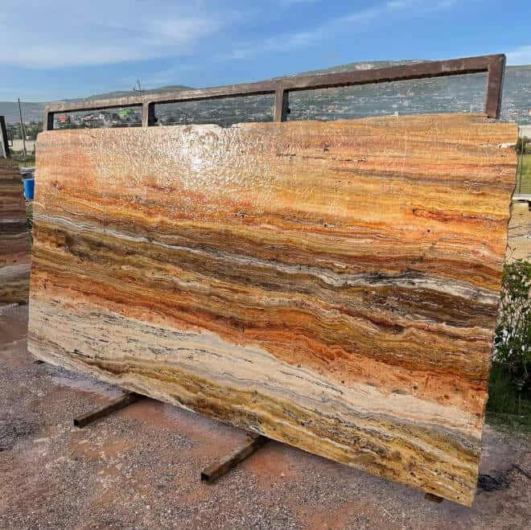

LAS MEJORES PIEDRAS NATURALES
Suministramos piedras naturales que brindan calidez y belleza a tus ambientes.


PRODUCTOS 100% NATURALES
Nuestra experiencia en proyectos de todo tipo y tamaño nos ha dado la oportunidad de participar en proyectos hoteleros, centros comerciales, instituciones financieras, restaurantes, así como en pequeños proyectos de casas y capillas.
